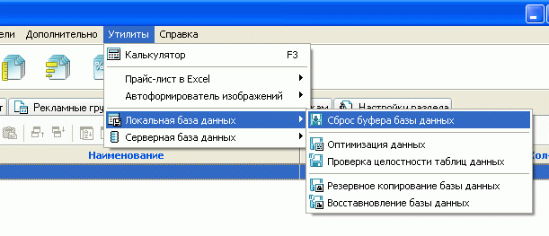

При внесении различных изменений и дополнений в данные магазина, они, в силу специфики работы компьютера, не сразу сохраняются на жестком диске, а буферизируются. Это ускоряет работу вычислительной машины, но приводит к риску утери изменений в случае внезапного отключения питания компьютера, сбоя, иных неблагоприятных факторов.
Чтобы максимально исключить возможное влияние негативных факторов на сохранность произведенных изменений и дополнений при интенсивном или значительном обновлении данных рекомендуется производить сброс буфера базы данных (аналог функции "Сохранить" большинства редакторов).
Утилита сброса буфера базы данных вызывается из главного меню программы Melbis Shop "Утилиты - Локальная база данных - Сброс буфера базы данных" и внешне никак себя не проявляет.

В случае завершения работы программы Melbis Shop выполнять сброс буфера базы данных принудительно не требуется, поскольку в этом случае это происходит автоматически.